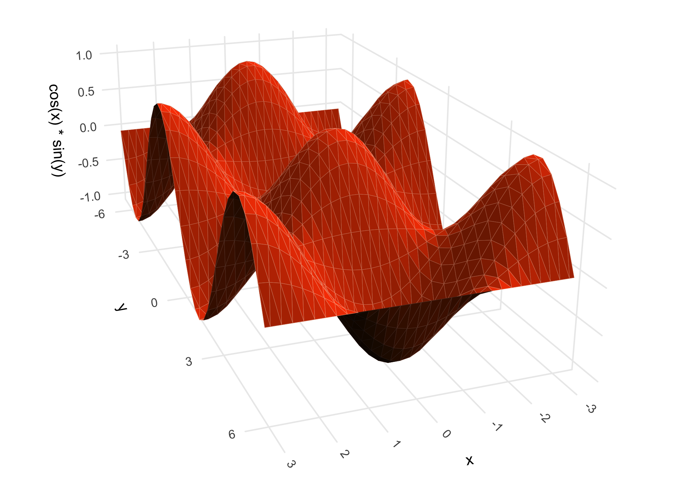
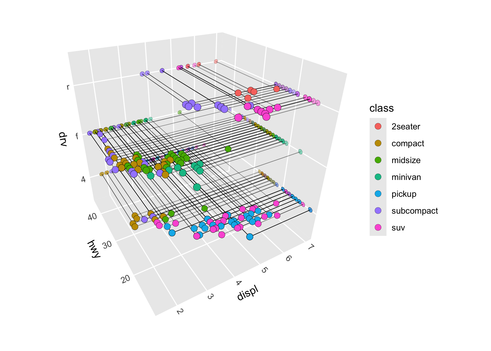
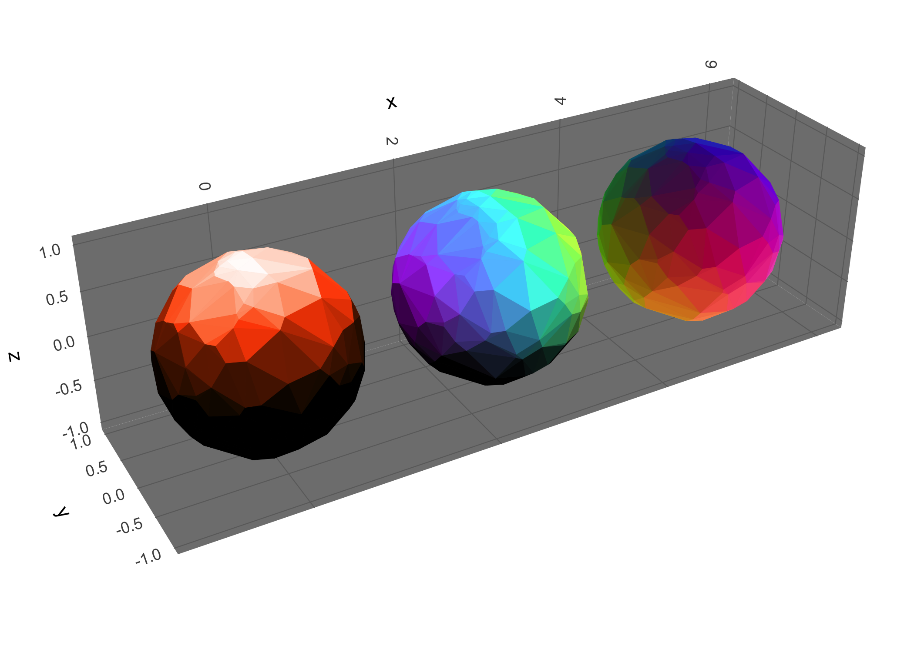
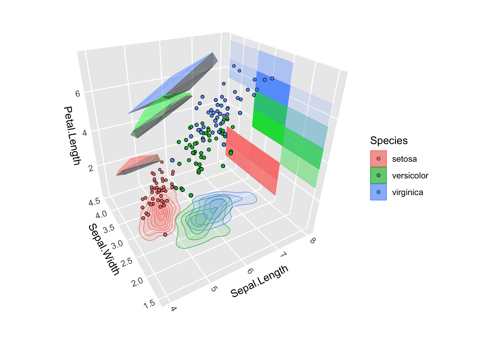

ggcube is an R package that extends ggplot2 to support 3D data visualization. Use it to create 3D scatter plots, surfaces, volumes, and complex layered visualizations using familiar ggplot2 syntax with aes(x, y, z) and coord_3d().
The package provides a variety of 3D-specific layer functions to render surfaces, prisms, points, and paths in 3D. You can control plot geometry with 3D projection parameters, can apply a range of 3D lighting models, and can mix 3D layers with 2D layers rendered on cube faces.
ggcube aims for seamless integration with ggplot2. Standard ggplot2 features work as expected, including faceting, themes, scales, legends, and layering. In addition to the 3D-specific functions, it also works with many existing ggplot2 stats and geoms.
WARNING: This package is in development and has not yet been officially released. Bugs and breaking changes are not unlikely.
Installation
You can install the development version of ggcube from GitHub with:
devtools::install_github("matthewkling/ggcube")Quick start
The essential ingredient of a ggcube plot is coord_3d(). Adding this to a standard ggplot, and providing a third (z) aesthetic variable, creates a 3D plot:
library(ggplot2)
library(ggcube)
# Basic 3D scatter plot
ggplot(mtcars, aes(mpg, wt, qsec, color = factor(cyl))) +
geom_point() +
coord_3d()
Surfaces
-
stat_function()visualizes mathematical functions -
stat_surface_3d()renders surfaces based on existing grid data such as terrain data -
stat_smooth_3d()fits statistical models with two predictors, and visualizes fitted predictions and confidence intervals -
stat_density_3d()creates perspective visualizations of 2D kernel density estimates -
stat_hull_3d()plots triangulated volumes based on convex or alpha hulls of 3D point data
Example: a terrain surface using stat_function_3d():
ggplot(mountain, aes(x, y, z)) +
stat_surface_3d(aes(fill = z, color = z),
light = light(direction = c(1, 0, 0))) +
scale_fill_viridis_c() + scale_color_viridis_c() +
coord_3d(ratio = c(1.5, 2, 1)) +
guides(fill = guide_colorbar_shaded())
Example: a mathematical surface using stat_function_3d():
ggplot() +
stat_function_3d(
fun = function(x, y) cos(x) * sin(y),
xlim = c(-pi, pi), ylim = c(-pi, pi),
color = "black"
) +
coord_3d(yaw = 150) +
theme_minimal() Example: a fitted model surface using stat_smooth_3d():
# Generate scattered 3D data
set.seed(123)
d <- data.frame(x = runif(50, -2, 2),
y = runif(50, -2, 2))
d$z <- d$x + d$x^2 - d$y^2 + rnorm(50)
# Plot GAM fit with uncertainty layers
ggplot(d, aes(x, y, z)) +
stat_smooth_3d(aes(fill = after_stat(level)),
method = "gam", fomula = z ~ te(x, y),
se = TRUE, level = 0.99,
domain = "bbox", color = "black") +
scale_fill_manual(values = c("red", "darkorchid4", "steelblue")) +
coord_3d()
Prisms
-
stat_voxel_3d()renders 3D pixel data sparse arrays of cubes -
stat_pillar_3d()produces 3D column charts -
stat_histogram_3d()(in prep) -
stat_prism_3d()(in prep)
Example: a 3D bar chart using stat_pillar_3d():
# 3D pillar visualization
set.seed(123)
data <- data.frame(x = sample(1:10, 20, replace = TRUE),
y = sample(1:10, 20, replace = TRUE),
z1 = runif(20),
z2 = runif(20))
ggplot(data, aes(x, y, z1, zmin = z2, fill = z2 - z1)) +
stat_pillar_3d(color = "black", linewidth = 0.1, width = 1) +
scale_fill_gradient2() + guides(fill = guide_colorbar_shaded()) +
coord_3d()
Paths
geom_path_3d() renders paths in 3D space with depth-based scaling and sorting:
butterfly <- lorenz_attractor(n_points = 8000, dt = .01)
ggplot(butterfly, aes(x, y, z, color = time)) +
geom_path_3d(linewidth = 0.1, color = "black",
position = position_on_face(c("xmax", "ymax", "zmin"))) +
geom_path_3d(linewidth = 0.3) +
scale_color_gradientn(colors = c("blue", "purple", "red", "orange")) +
coord_3d() +
theme_light()
Points
While ggplot2::geom_point() works with ggcube as demonstrated above, geom_point_3d() creates 3D-aware scatter plots with proper point ordering, depth-scaled point sizes, and options to include reference lines and reference points projecting 3D points onto 2D face panels:
ggplot(mtcars, aes(mpg, wt, qsec, fill = factor(cyl))) +
geom_point_3d(size = 5, shape = 21, color = "black", stroke = .1,
ref_lines = TRUE, ref_points = TRUE,
ref_faces = c("zmin", "xmax")) +
coord_3d()
Lighting effects
Lighting of 3D polygon layers is controlled by providing a light() specification.
ggplot(sphere_points, aes(x, y, z)) +
coord_3d(scales = "fixed") +
scale_fill_viridis_c() +
scale_color_viridis_c() +
theme_dark() +
theme(legend.position = "none") +
# add shading to solid color/fill
stat_hull_3d(fill = "gray50", color = "gray50",
light = light(method = "direct", mode = "hsl",
direction = c(-1, 0, 0))) +
# add shading to aesthetic color/fill
stat_hull_3d(aes(x = x + 2.5, fill = z, color = z),
light = light(method = "diffuse", mode = "hsl",
direction = c(1, 0, 0)))
Face projection
3D and 2D layers can be mixed by using position_on_face() to project 2D data onto cube faces:
ggplot(iris, aes(Sepal.Length, Sepal.Width, Petal.Length,
color = Species, fill = Species)) +
stat_density_2d( # place 2D density plot on zmin face
position = position_on_face(faces = "zmin", axes = c("x", "y")),
geom = "polygon", alpha = .1, linewidth = .25) +
stat_hull_3d( # flatten 3D hull layer onto ymax face
position = position_on_face("ymax"), alpha = .5) +
stat_voxel_3d( # flatten 3D voxel onto xma face, to create 2D binned
aes(round(Sepal.Length), round(Sepal.Width), round(Petal.Length)),
position = position_on_face("xmax"), alpha = .25) +
geom_point_3d( # 3D scatter plot
shape = 21, color = "black", stroke = .25) +
coord_3d() +
xlim(4, 8)